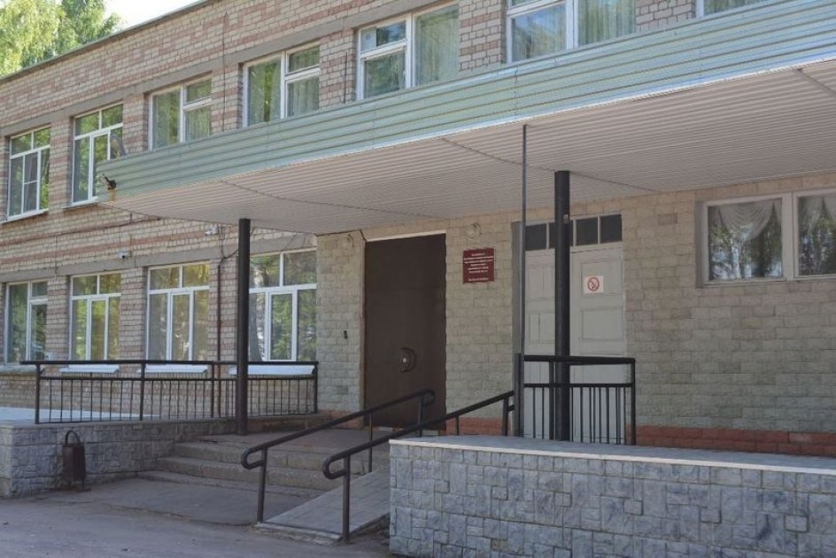
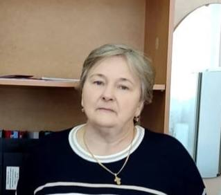

Главная

МБОУ "Красносельская средняя школа"
„В традициях школы - стабильность, высокий профессионализм педагогического коллектива и его нацеленность на инновационную деятельность. Школа обеспечивает целостное и всестороннее развитие учащихся. Наша задача: обучая – воспитывать, воспитывая - обучать. Все новости школы в одном месте“.
Директор школы

Морозова Валентина
Морозова Валентина
Александровна
-
Телефон
+79051504062 -
Время приема
Вторник с 14:00 до 16:00 -
Почта
krasnoe_school@mail.ruа
Заслуженный учитель РФ 2008, стаж работы 35 лет. Образование: высшее; учебное заведение: КГПИ им. Н.А. Некрасова; год окончания: 1986; очное/заочное: очное; квалификация по диплому: учитель математики и физики.
Профили (10-11 классы)
-
Технологический
-
Социально-экономический
-
Гуманитарный
-
Естественно-научный